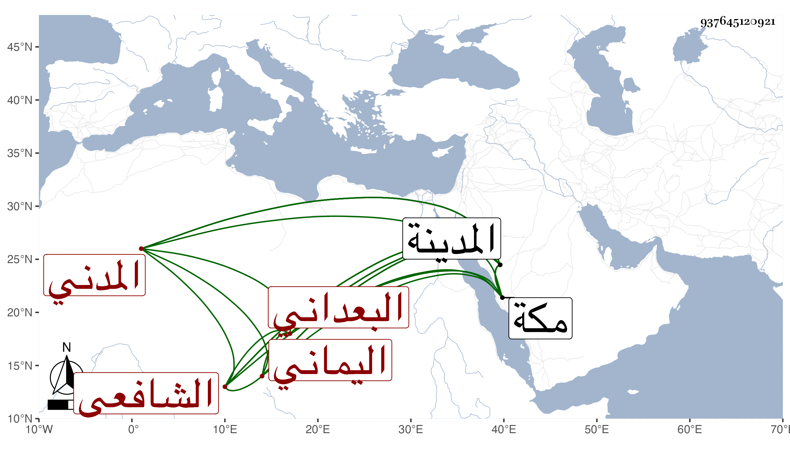

0902Sakhawi.DawLamic.ITO20230111-ara1.EIS1600.937645120921
Biography ID: 937645120921
577
محمد بن محمد بن محمد بن عبد الله الشمس بن الشمس البعداني اليماني الأصل المدني الشافعي ابن العوفي الماضي أخوه عبد الوهاب ويعرف كأبيه وجده بالمسكين وهو حفيد زينب ابنة محمد بن صالح أخي عبد الوهاب . ولد في سنة أربع أو خمس وستين وثمانمائة بالمدينة ونشأ بها فقرأ القرآن وأربعي النووي ومنهاجه وجمع الجوامع والألفيتين الحديثية والنحوية والشاطبية وعرض على أبي الفرج المراغي وفتح الدين بن تقي وابن يونس والأبشيطي ولازمه فقرأ عليه من تصانيفه شرح خطبة المنهاج ومناسبات أبوابه وتخميس يقول العبد وسمع عليه في الفرائض والحساب والفقه وأصوله والعربية وغير ذلك الشيء الكثير وقرأ على أبي الفرج المذكور الشمائل وسمع عليه جملة وكان أحد القراء في تقسيم الشرف عبد الحق السنباطي للمنهاج حين كان بالمدينة وأكثر عن أبي الفضل ابن الإمام الدمشقي بحيث استوفى عليه الكتب الستة بل قرأ عليه بحثا قطعة من المنهاج وقسما من ألفية النحو مع سماع باقيها وقطعة من جمع الجوامع وأخذ عني في مجاورتي بالمدينة أشياء بقراءته وقراءة غيره ومن ذلك في الثانية مناقب العباس وفي الأولى جل القول البديع وغير ذلك بل قرأ علي بمكة الثلاثيات وغيرها وعلى النجم بن فهد أشياء ولازم الشريف السمهودي في قراءة الكثير من تصانيفه وغيرها في الفقه وأصوله والعربية في التقسيم وغيره والقاضي صلاح الدين بن صالح وكذا قرأ على الشريف المحيوي الحنبلي والشمس البلبيسي والنور المحلي وغيرهم من الغرباء والقاطنين فكان منهم النور الطنتدائي قرأ عليه مجموع الكلائي ، واختص بصحبة الأمير شاهين حين كان شيخ الحرم وقرأ بحضرته كتبا كثيرة وصار يكتب عنه المراسيم والمطالعات ونحوها وتميز في ذلك فكان موقع البلد بل قرأ وسمع على عبد الله بن صالح وفتح الدين بن علبك وجدته لأبيه المشار إليها ولم يخرج من بلده لغير الحج .
